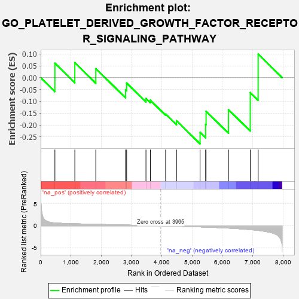
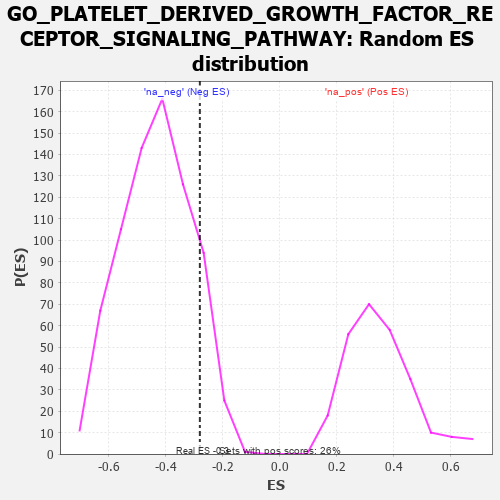

| | | Dataset | 7d |
| Phenotype | NoPhenotypeAvailable |
| Upregulated in class | na_neg |
| GeneSet | GO_PLATELET_DERIVED_GROWTH_FACTOR_RECEPTOR_SIGNALING_PATHWAY |
| Enrichment Score (ES) | -0.27956527 |
| Normalized Enrichment Score (NES) | -0.6482435 |
| Nominal p-value | 0.89295393 |
| FDR q-value | 1.0 |
| FWER p-Value | 1.0 |
Table: GSEA Results Summary

Fig 1: Enrichment plot: GO_PLATELET_DERIVED_GROWTH_FACTOR_RECEPTOR_SIGNALING_PATHWAY
Profile of the Running ES Score & Positions of GeneSet Members on the Rank Ordered List
| PROBE | GENE SYMBOL | GENE_TITLE | RANK IN GENE LIST | RANK METRIC SCORE | RUNNING ES | CORE ENRICHMENT | | 1 | LRP1 | | | 470 | 0.648 | 0.0609 | No |
| 2 | SRC | | | 1128 | 0.459 | 0.0633 | No |
| 3 | SGPL1 | | | 1820 | 0.334 | 0.0382 | No |
| 4 | FER | | | 2803 | 0.183 | -0.0514 | No |
| 5 | PHF14 | | | 2838 | 0.178 | -0.0228 | No |
| 6 | HGS | | | 3476 | 0.080 | -0.0879 | No |
| 7 | CBL | | | 3621 | 0.056 | -0.0956 | No |
| 8 | ABL1 | | | 4125 | -0.027 | -0.1539 | No |
| 9 | HIP1 | | | 4485 | -0.092 | -0.1820 | No |
| 10 | PTEN | | | 5262 | -0.261 | -0.2312 | Yes |
| 11 | CBLB | | | 5445 | -0.306 | -0.1975 | Yes |
| 12 | LRIG2 | | | 5460 | -0.310 | -0.1419 | Yes |
| 13 | MYO1E | | | 6200 | -0.537 | -0.1354 | Yes |
| 14 | CSPG4 | | | 6918 | -0.878 | -0.0630 | Yes |
| 15 | PTPRJ | | | 7180 | -1.054 | 0.0994 | Yes |
Table: GSEA details [plain text format]

Fig 2: GO_PLATELET_DERIVED_GROWTH_FACTOR_RECEPTOR_SIGNALING_PATHWAY: Random ES distribution
Gene set null distribution of ES for GO_PLATELET_DERIVED_GROWTH_FACTOR_RECEPTOR_SIGNALING_PATHWAY